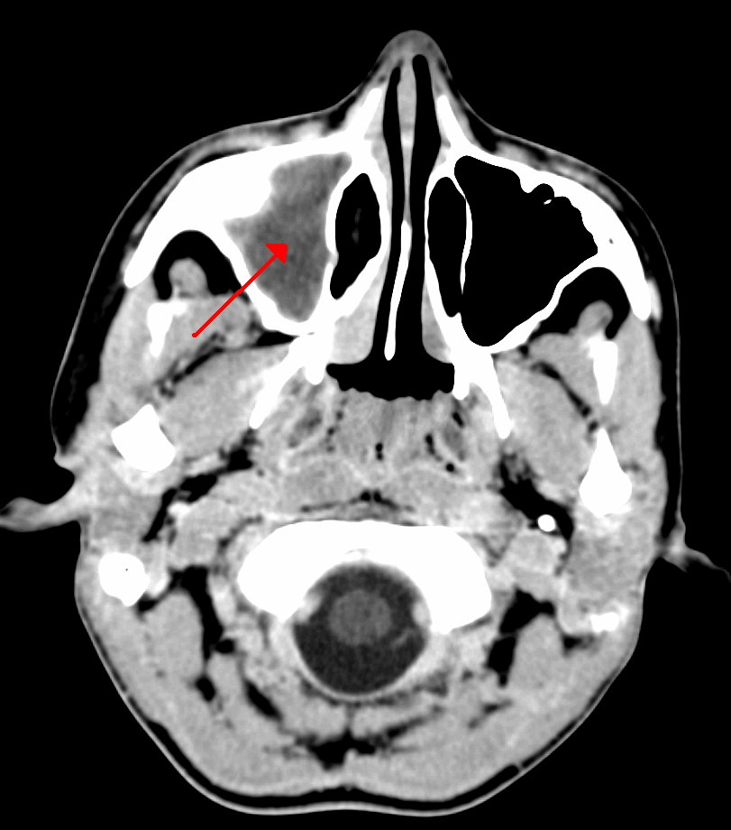
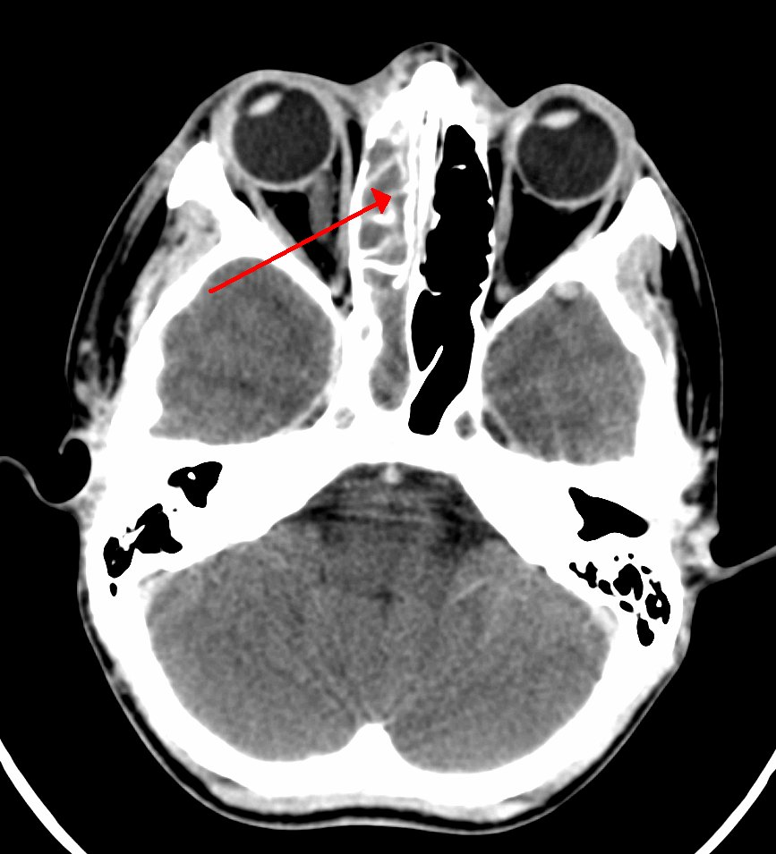

衛教目錄 › 耳鼻喉 › 鼻竇炎
鼻竇炎
孩子感冒時鼻竇多少都會一起發炎，大部分會跟著感冒一起好。只有少數孩子會變成細菌性鼻竇炎——典型的表現是感冒超過 10 天沒有改善，或是好轉後又變嚴重。
6–7%兒童上呼吸道感染會併發細菌性鼻竇炎
10 天感冒症狀持續超過 10 天沒有改善，才要想到鼻竇炎
鼻涕顏色黃綠色鼻涕不代表一定是細菌感染
1鼻竇在哪裡？
鼻竇是鼻子周圍、臉部骨頭裡的空腔，有小小的開口通到鼻腔，平常靠黏膜上的纖毛把分泌物排到鼻子裡。感冒或過敏讓黏膜腫起來時，開口被堵住，鼻涕排不出去，細菌就可能在裡面繁殖。
BruceBlaus（Blausen Medical）／Wikimedia Commons／CC BY 3.0，加上中文標示
2鼻竇會隨年齡慢慢長大
小寶寶出生時只有很小的上頜竇和篩竇，其他鼻竇要到上學後才發育。所以幼兒很少有額頭痛的額竇炎，表現常常只是持續流鼻涕和咳嗽。
3是感冒，還是細菌性鼻竇炎？
一般感冒的鼻涕、咳嗽通常在 5–7 天最嚴重，10 天內明顯改善。以下三種情況才要懷疑細菌性鼻竇炎 [1]：
| 病程 | 表現 |
|---|---|
| ① 持續不改善 | 流鼻涕（任何顏色）或白天也咳嗽，超過 10 天都沒有好轉 |
| ② 好了又變壞 | 感冒本來慢慢好轉，又突然發燒，或鼻涕、咳嗽變得更嚴重 |
| ③ 一開始就很嚴重 | 高燒 ≥ 39°C，同時有濃稠的膿鼻涕，連續 3 天以上 |
其他可能的表現：口臭、晚上咳嗽或打鼾、臉頰或眼睛周圍悶痛、鼻塞。大孩子才比較會說頭痛或臉痛。
4鼻涕顏色的迷思
黃綠色鼻涕 ≠ 細菌感染。感冒幾天後，鼻涕本來就會從清變濃、變黃綠，再慢慢變清，這是白血球在對抗病毒的正常過程。2023 年一項 500 多位孩子的研究也發現，鼻涕顏色不能預測抗生素有沒有效 [2]。判斷重點是「病程多久、有沒有變嚴重」，而不是顏色。
5治療與照顧
- 抗生素：醫師確診細菌性鼻竇炎後，通常會開 amoxicillin 等抗生素，大多數孩子在 2–3 天內明顯改善 [1]。症狀持續型的孩子，醫師也可能先觀察 3 天再決定 [1]。
- 抗生素要照醫師指示吃完，不要症狀好了就停。
- 洗鼻：生理食鹽水噴霧或洗鼻器可以沖掉鼻涕，讓鼻子比較通（方法見過敏性鼻炎頁的洗鼻教學）。
- 多喝水、充分休息，發燒或臉痛時可使用退燒止痛藥。
- 不建議常規使用：感冒糖漿、抗組織胺、去充血劑——研究沒有證明對兒童鼻竇炎有幫助 [1]。
- 有過敏性鼻炎的孩子，控制好過敏能減少鼻竇炎反覆發生。
6危險警訊：出現任何一項，請立刻就醫
- 眼皮或眼睛周圍紅腫、眼睛轉動會痛、眼球突出或看東西模糊、複視
- 劇烈頭痛、一直嘔吐、脖子僵硬
- 精神變差、嗜睡、意識不清、抽搐
- 額頭腫起一塊軟軟的包
- 開始抗生素 48–72 小時後仍然發燒或更嚴重
這些可能是鼻竇炎擴散到眼眶或顱內的併發症，雖然少見，但需要緊急治療。
7預防
- 勤洗手、減少感冒機會；每年接種流感疫苗，按時接種肺炎鏈球菌疫苗。
- 控制過敏性鼻炎；遠離二手菸。
- 一年反覆 3–4 次以上，或鼻塞、膿鼻涕持續超過 3 個月，可以請醫師評估是否轉介耳鼻喉科。
近五年實證重點（2026/11 整理）
- 誰會從抗生素獲益（JAMA 2023 RCT）：515 名 2–11 歲臨床診斷鼻竇炎兒童，amoxicillin-clavulanate（90/6.4 mg/kg/day）× 10 天 vs 安慰劑：症狀分數較低、症狀緩解時間 7 vs 9 天。鼻咽培養無致病菌者獲益很小，而鼻涕顏色不影響療效 [2]。
- 統合分析（Pediatrics 2024）：6 篇 RCT，抗生素使治療失敗率下降 41%（RR 0.59），但腹瀉增加（RR 1.62）；考量良好的自然病程，密切觀察也是合理選項 [3]。
- 未來方向：鼻咽細菌檢測可能有助於篩選需要抗生素的孩子，但尚未成為常規 [2,4]。
- AAP 2013 指引仍為現行版本；療程最佳長度仍缺乏 RCT 證據 [1,4]。
診斷標準（AAP 2013）
急性上呼吸道感染合併以下任一 [1]：
- 持續型：鼻漏（任何性質）和／或日間咳嗽 ≥ 10 天未改善。
- 惡化型：初期改善後，再出現或加重的鼻漏、日間咳嗽或發燒。
- 嚴重型：體溫 ≥ 39°C 合併膿性鼻漏，連續 ≥ 3 天。
| 病程 | 建議 |
|---|---|
| 嚴重型、惡化型 | 抗生素 [1] |
| 持續型 | 抗生素 或 觀察 3 天（與家長共同決策）[1] |
影像檢查
- 單純急性鼻竇炎不需要影像（X 光、CT、MRI 皆不建議）：影像異常在一般感冒兒童中也很常見，無法區分病毒或細菌 [1]。
- 懷疑眼眶或顱內併發症時：顯影鼻竇／眼眶／腦部 CT 和／或 MRI [1]。

James Heilman, MD／Wikimedia Commons／CC BY-SA 3.0，已轉為 JPEG

James Heilman, MD／Wikimedia Commons／CC BY-SA 3.0，已轉為 JPEG
抗生素與劑量
| 藥物 | 劑量 | 使用時機／備註 |
|---|---|---|
| 第一線 [1] | ||
| Amoxicillin | 45 mg/kg/day 分 2 次 或 80–90 mg/kg/day 分 2 次 | 無抗藥危險因子時標準劑量；肺炎鏈球菌抗藥率高的地區用高劑量（每日最多 2 g/次）。 |
| Amoxicillin-clavulanate | amoxicillin 80–90 mg/kg/day ＋ clavulanate 6.4 mg/kg/day，分 2 次 | < 2 歲、上托育機構、過去 4 週用過抗生素、中重度、或抗藥率高的地區 [1]。IDSA 偏好以此為經驗用藥 [5]。 |
| Ceftriaxone | 50 mg/kg IM/IV | 嘔吐無法口服時單劑，24 小時後改善再轉口服 [1]。 |
| Penicillin 過敏（非嚴重型）[1] | ||
| Cefdinir | 14 mg/kg/day QD 或分 2 次 | |
| Cefuroxime | 30 mg/kg/day 分 2 次 | |
| Cefpodoxime | 10 mg/kg/day QD | |
| 嚴重型過敏或治療失敗 [1,5] | ||
| Clindamycin ＋ cefixime | Clindamycin 30–40 mg/kg/day 分 3 次 ＋ cefixime 8 mg/kg/day 分 2 次 | clindamycin 涵蓋肺炎鏈球菌，cefixime 涵蓋流感嗜血桿菌與 Moraxella。 |
| Levofloxacin | 10–20 mg/kg/day QD 或分 2 次 | 僅限嚴重 penicillin 過敏或其他選項失敗時。 |
- 不建議：macrolide（azithromycin、clarithromycin）與 TMP-SMX——肺炎鏈球菌與流感嗜血桿菌抗藥率高 [1,5]。
- 療程：最佳長度缺乏研究；常用 10 天，或症狀消失後再 7 天 [1]。
- 輔助治療：鼻內類固醇、生理食鹽水沖洗、去充血劑、抗組織胺證據不足，不常規建議 [1]。
Cefixime 與 levofloxacin 的角色
| 藥物 | 角色 | 建議使用時機 | 劑量 | 療程 |
|---|---|---|---|---|
| Cefixime（第三代口服） | 只能合併使用：涵蓋流感嗜血桿菌與 Moraxella，但對肺炎鏈球菌活性差 [1,5] | ① 非嚴重型 penicillin 過敏；② 高劑量 amoxicillin-clavulanate 治療失敗——皆與 clindamycin（或 linezolid）併用 [1,5] | 8 mg/kg/day 分 2 次 （每日最多 400 mg）[1,5] ＋ clindamycin 30–40 mg/kg/day 分 3 次 | 10–14 天，或症狀消失後再 7 天 [1,5] |
| Levofloxacin | 保留用藥：單一藥物即可涵蓋肺炎鏈球菌（含多重抗藥）、流感嗜血桿菌、Moraxella | ① 嚴重 IgE 型 penicillin 過敏；② 其他治療失敗；③ 已知多重抗藥菌 [1,5,6] | 10–20 mg/kg/day，q12–24h [5] （6 個月–< 5 歲分 2 次；≥ 5 歲 QD；每日最多 500–750 mg） | 10–14 天 [5] |
Levofloxacin 使用前提醒：屬氟喹諾酮類，在兒童只有少數 FDA 核准適應症（吸入性炭疽、鼠疫），其餘皆為仿單外使用；可能有肌腱、肌肉骨骼、QT 延長、低血糖與神經精神副作用。AAP 建議只在無其他安全有效的選擇、或已知多重抗藥菌時使用 [6]；國內仿單亦不建議常規用於 18 歲以下。
治療失敗（72 小時內未改善或惡化）
| 原本處置 | 下一步 [1] |
|---|---|
| 觀察中 | 開始 amoxicillin（± clavulanate） |
| Amoxicillin | 改高劑量 amoxicillin-clavulanate |
| 高劑量 amoxicillin-clavulanate | Clindamycin ＋ cefixime，或 linezolid ＋ cefixime，或 levofloxacin；考慮耳鼻喉科會診與鼻竇抽吸培養 |
併發症
| 類型 | 表現 | 處置 |
|---|---|---|
| 眼眶（最常見，多來自篩竇） | 眼眶前／眼眶蜂窩性組織炎、骨膜下膿瘍、眼眶膿瘍：眼瞼腫、眼球突出、眼球運動受限或疼痛、視力下降 | 顯影 CT；住院靜脈抗生素；眼科與耳鼻喉科會診，必要時引流 [1]。 |
| 顱內 | 硬膜外／硬膜下膿瘍、腦膿瘍、腦膜炎、靜脈竇栓塞：劇烈頭痛、嘔吐、意識改變、局部神經學症狀 | 顯影 MRI；神經外科會診 [1]。 |
| 骨 | Pott's puffy tumor（額骨骨髓炎合併骨膜下膿瘍）：額頭腫脹，多見於青少年 | 影像與手術評估。 |
反覆急性鼻竇炎（一年 ≥ 4 次）或慢性鼻竇炎（≥ 90 天），應評估過敏、免疫缺陷、囊性纖維化、纖毛運動障礙、腺樣體肥大與解剖異常。
參考資料
- Wald ER, Applegate KE, Bordley C, et al. Clinical practice guideline for the diagnosis and management of acute bacterial sinusitis in children aged 1 to 18 years. Pediatrics. 2013;132(1):e262–e280. AAP 指引（現行版）
- Shaikh N, Hoberman A, Shope TR, et al. Identifying children likely to benefit from antibiotics for acute sinusitis: a randomized clinical trial. JAMA. 2023;330(4):349–358. doi:10.1001/jama.2023.10854 RCT
- Conway SJ, Mueller GD, Shaikh N. Antibiotics for acute sinusitis in children: a meta-analysis. Pediatrics. 2024;153(5):e2023064244. doi:10.1542/peds.2023-064244 統合分析
- Wald ER. To treat or not to treat? And for how long? J Pediatric Infect Dis Soc. 2025;14(1):piae130. doi:10.1093/jpids/piae130 評論
- Chow AW, Benninger MS, Brook I, et al. IDSA clinical practice guideline for acute bacterial rhinosinusitis in children and adults. Clin Infect Dis. 2012;54(8):e72–e112. IDSA 指引
- Jackson MA, Schutze GE; Committee on Infectious Diseases. The use of systemic and topical fluoroquinolones. Pediatrics. 2016;138(5):e20162706（AAP 已於 2025 年 6 月將此報告列為退休，尚無新版取代）. AAP 臨床報告
文獻搜尋截至 2026 年 11 月。AAP 與 IDSA 尚未發布兒童鼻竇炎指引更新，故仍以 2013、2012 年版為架構。
本頁內容整理於 2026 年 11 月，供門診衛教與醫療人員參考，不能取代個別的診察與判斷。藥物劑量請以藥品仿單及最新指引為準。